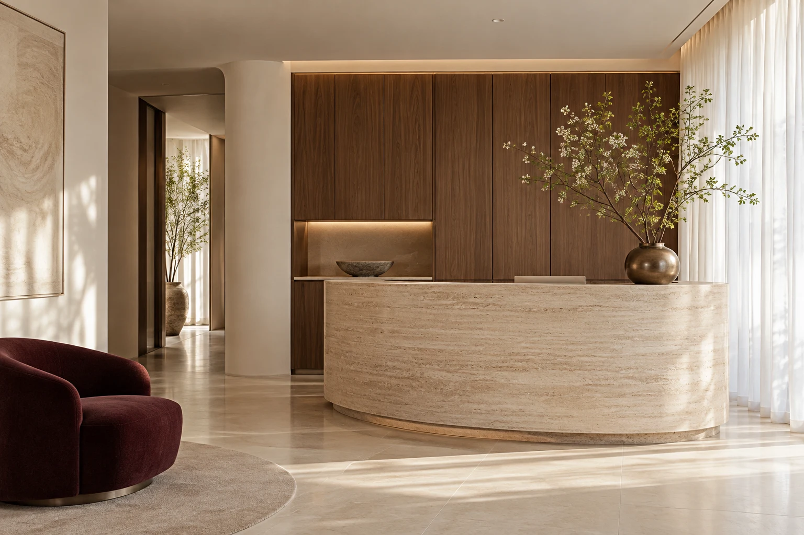

피부의 탄탄한 균형
탄력 · 리프팅
변화하는 피부의 탄력과 얼굴선을 살피고
피부 상태에 맞는 방향을 제안합니다.
피부 본연의 아름다움을 만나는 곳
유행보다 당신의 피부를 먼저 생각합니다.
지금의 피부를 이해하는 섬세한 진료, 오브 피부과.
한 사람을 위한 충분한 상담
피부 상태에 맞춘 진료 계획
일상까지 이어지는 피부 관리
오브의 생각
진료 프로그램
작은 고민부터 차근차근.
관심 있는 프로그램을 살펴보세요.
변화하는 피부의 탄력과 얼굴선을 살피고
피부 상태에 맞는 방향을 제안합니다.
서로 다른 색소 고민을 세심하게 구분하고
피부에 맞는 진료 계획을 상담합니다.
모공과 피부결의 다양한 원인을 살펴
기본부터 정돈하는 관리를 함께합니다.
반복되는 트러블과 예민함에 귀 기울여
피부와 생활 습관을 함께 살펴봅니다.
진료 항목은 디자인을 위한 예시입니다. 실제 진료 방법은 의료진 상담 후 결정하며, 개인의 피부 상태에 따라 달라질 수 있습니다.

공간 콘셉트 이미지 · AI 생성오브의 공간
피부를 돌보는 시간이
나를 돌보는 시간이 되도록.
편안한 동선과 차분한 공간을 생각했습니다.
차분하게머무는 순간까지 편안한 분위기
세심하게나의 고민에 집중하는 상담
편안하게일상에서 잠시 벗어나는 여유
처음 방문하신다면
처음의 고민부터 그다음의 관리까지.
오브가 생각하는 진료의 순서입니다.
피부 고민과 생활 습관,
원하는 변화에 대해 듣습니다.
현재의 피부 상태를 살피고
필요한 진료를 설명합니다.
진료 과정과 주의사항을 이해한 뒤
나에게 맞는 계획을 결정합니다.
진료 이후의 관리 방법과
확인이 필요한 변화를 안내합니다.
자주 묻는 질문
상담 예약에서 ‘상담 후 결정’을 선택해주세요. 원하는 변화나 현재의 고민을 의료진과 나눈 뒤 진료 방향을 결정할 수 있습니다.
현재 사용하는 화장품, 복용 중인 약, 최근 받은 피부 진료 내용을 정리하면 상담에 도움이 됩니다. 별도의 준비 사항은 예약을 확정하는 병원에 확인해주세요.
현재 페이지는 디자인 시안으로, 입력 내용의 확인까지 체험할 수 있습니다. 병원에 전송되거나 예약이 확정되지는 않습니다. 실제 서비스에서는 병원의 확인 안내 후 예약이 확정됩니다.
아래 진료 안내에서 확인할 수 있습니다. 현재 시간표는 예시이며, 병원명·실제 진료 시간·주소·연락처를 등록한 후 운영용으로 사용할 수 있습니다.
진료 안내
나를 위한 작은 관심이 시작되는 곳.
편안한 마음으로 오브를 만나보세요.
일요일 · 공휴일 휴진 / 토요일 점심시간 없이 진료
실제 병원 주소와 연락처 등록 예정
아름다움보다 먼저, 당신을 생각합니다.
óveYour skin, your own beauty.